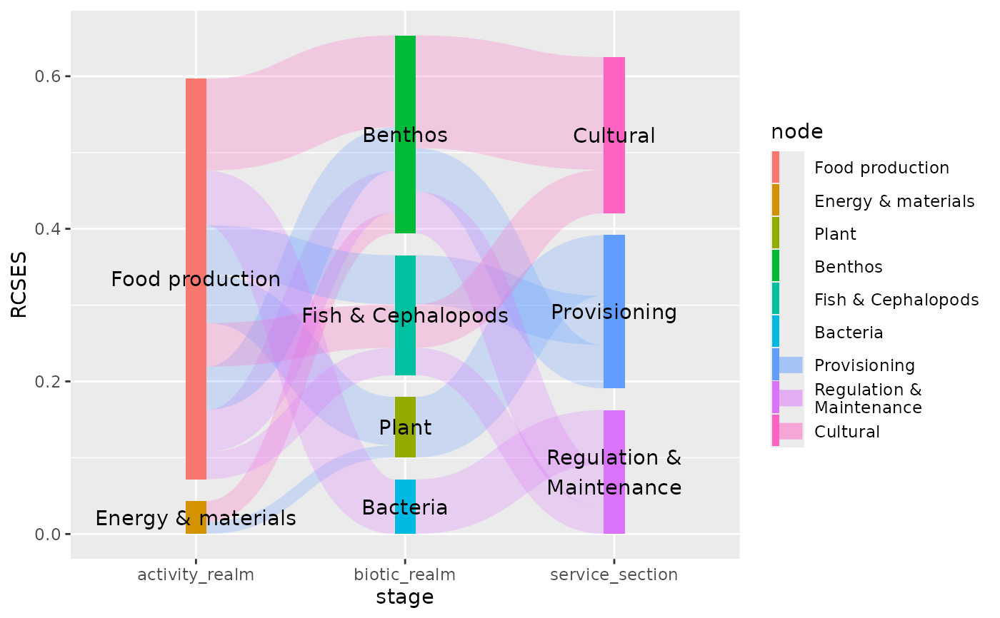
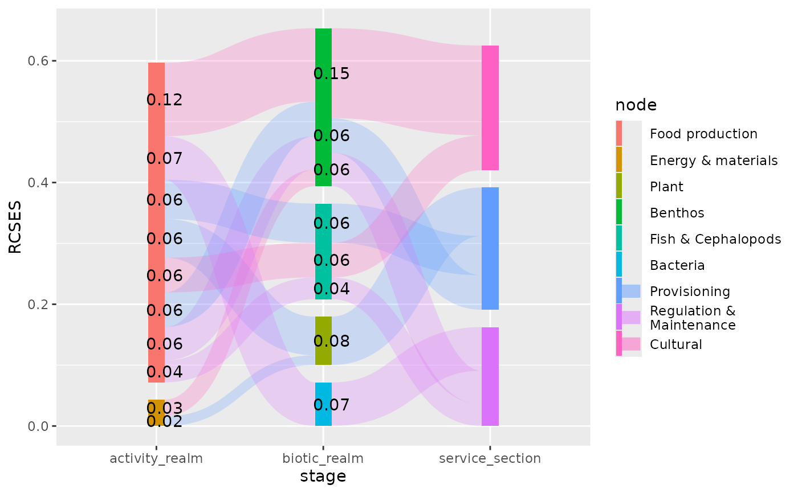
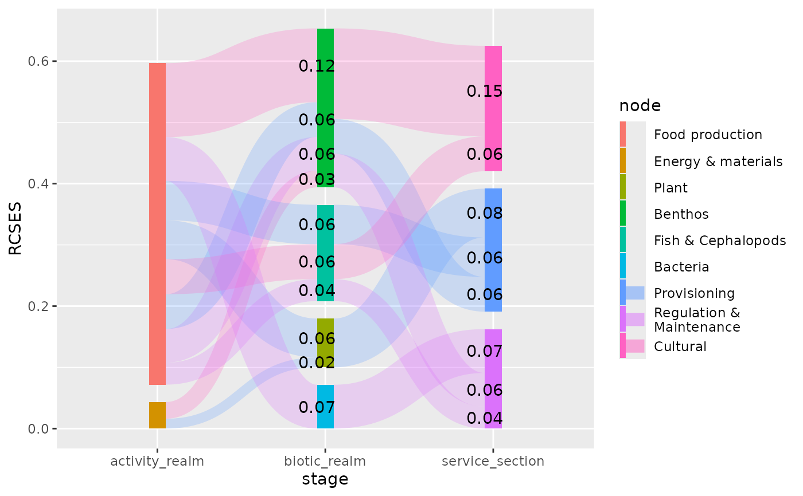

Calculates the x and y positions of elements (nodes and edges) in a
Sankey diagram.
Arguments
- width
Width of the node (
numeric). Whensplit_nodesis set toTRUEeach part of the split node will have half this width. Use"auto"to automatically determine a suitable width.- align
A
characterthat indicates how the nodes across the stages are aligned. It can be any of"top","bottom","center"or"justify".- order
A
characterindicating the method to be used for the order of stacking nodes and edges in a plot. Should be one of:ascending(default), sorts nodes and edges from large to small (largest on top);descendingsorts nodes and edges from small to large (smallest on top);as_iswill leave the order of nodes and edges as they are indata.- h_space
Horizontal space between split nodes (
numeric). This argument is ignored whensplit_nodes == FALSE. Use"auto"to automatically position split nodes.- v_space
Vertical space between nodes (
numeric). When set to zero (0), the Sankey diagram becomes an alluvial plot. Use"auto"to automatically determine a suitable vertical space.- nudge_x, nudge_y
Horizontal and vertical adjustment to nudge items by. Can be useful for offsetting labels.
- split_nodes
A
logicalvalue indicating whether the source and destination nodes should be depicted as separate boxes.- split_tol
When the relative node size (resulting source and destination edges) differs more than this fraction, the node will be displayed as two separate bars.
- direction
One of
"forward"(default) or"backward". When set to"backward"the direction of the edges will be inverted. In most cases this parameter won't affect the plot. It can be helpful when you want to decorate the end of an edge (instead of the start; see examples).- ...
Arguments passed on to
ggplot2::ggproto().
Value
Returns a ggplot2::Position class object.
Details
Based on the stat_* function applied to the parent's (stat_sankeynode(),
stat_sankeyedge) object either node or edge positions are calculated respectively.
These positions can be used to add additional layers (e.g., text or labels) to the
plot.
Examples
library(ggplot2)
data("ecosystem_services")
pos <- position_sankey(v_space = "auto", order = "ascending")
pos2 <- position_sankey(v_space = "auto", order = "ascending", direction = "backward")
## Let's subset the data, to make the plot less cluttered:
es_subset <- pivot_stages_longer(
subset(ecosystem_services, RCSES > 0.01),
c("activity_realm", "biotic_realm", "service_section"),
"RCSES",
"service_section"
)
plot <-
ggplot(es_subset, aes(x = stage, y = RCSES, group = node,
connector = connector, edge_id = edge_id,
fill = node)) +
geom_sankeynode(position = pos) +
geom_sankeyedge(position = pos, aes(fill = service_section))
# position labels at nodes
plot + geom_text(aes(label = node), stat = "sankeynode", position = pos)

# position labels at the start of edges
plot + geom_text(aes(label = sprintf("%0.2f", RCSES)), stat = "sankeyedge", position = pos)

# position labels at the end of edges
plot + geom_text(aes(label = sprintf("%0.2f", RCSES)), stat = "sankeyedge", position = pos2)
